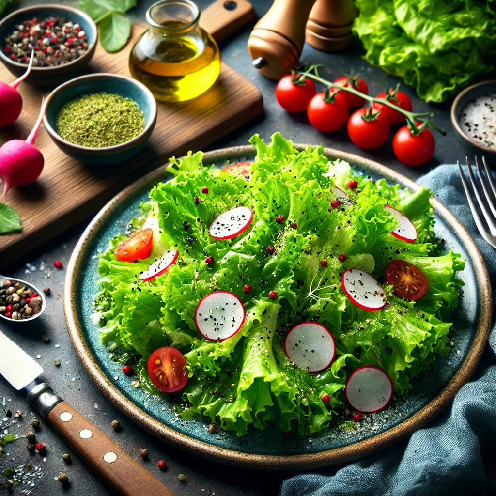

Kopfsalat Rezept
Zutaten
- 1 Kopfsalat, gewaschen und in mundgerechte Stücke zerteilt
- 1 Gurke, in Scheiben geschnitten
- 2 Tomaten, in Stücke geschnitten
- 1 rote Zwiebel, in feine Ringe geschnitten
- 50 g Feta-Käse, zerbröckelt
- 2 EL Olivenöl
- 1 EL Weißweinessig
- Salz und Pfeffer nach Geschmack
Zubereitung
- Salat vorbereiten: Kopfsalat, Gurke, Tomaten und Zwiebel in eine große Schüssel geben.
- Dressing: Olivenöl und Weißweinessig in einer kleinen Schüssel verrühren. Mit Salz und Pfeffer abschmecken.
- Anrichten: Dressing über den Salat gießen und gut vermengen. Feta-Käse darüber streuen.
- Servieren: Sofort servieren.